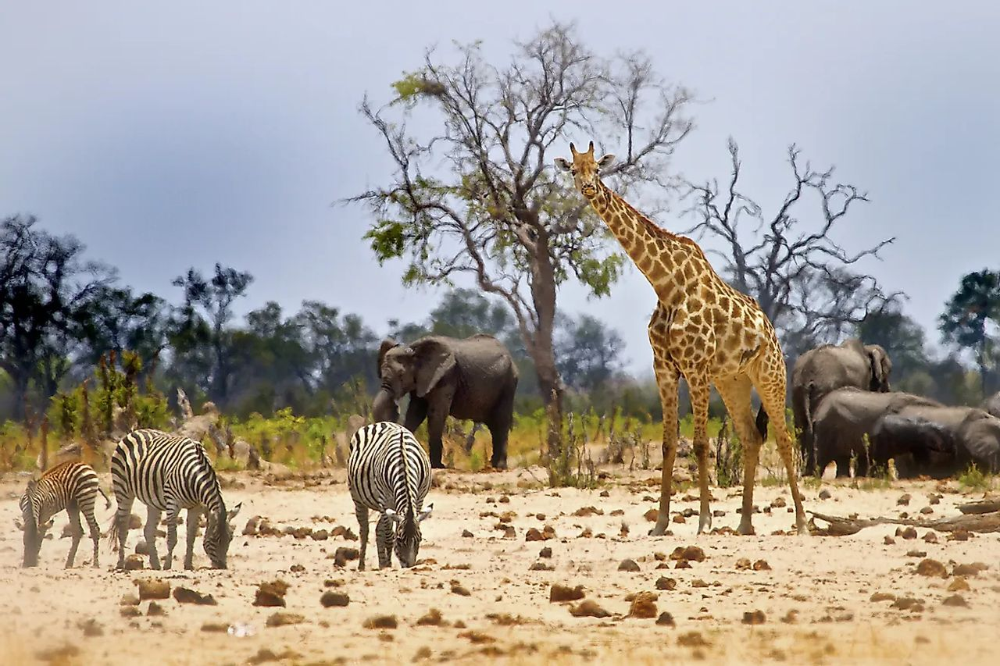
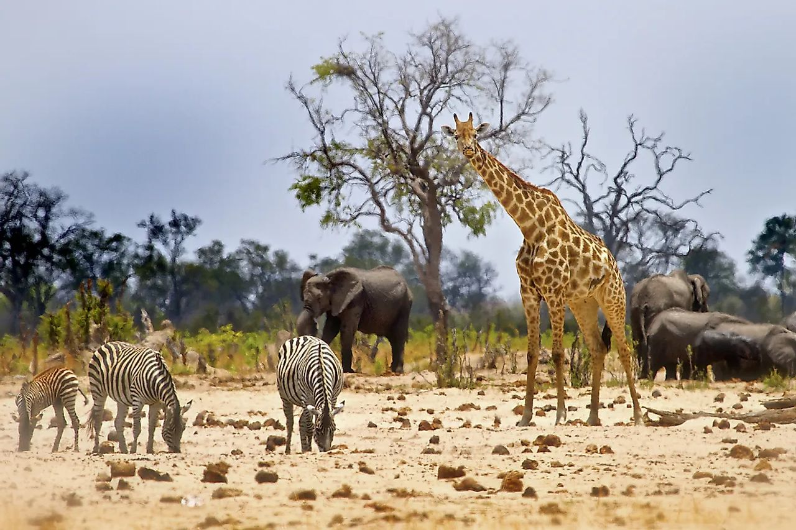

BLOG

 

 BLOG
BLOG
Philemon Abanga: Trailblazing Wildlife Conservation: Innovations Shaping a Sustainable Future
Introduction:
In a world where biodiversity is under constant threat, pioneering approaches to wildlife conservation have become indispensable. As ecosystems face unprecedented challenges, innovative strategies are emerging to protect and preserve our planet's precious wildlife.
1. Harnessing Technology for Conservation:
Technology is revolutionizing wildlife conservation by providing new tools for monitoring, research, and protection. From satellite tracking to AI-powered data analysis, advancements like these are transforming our ability to understand and safeguard endangered species in their natural habitats.
2. Empowering Communities as Stewards:
Engaging local communities is a cornerstone of successful conservation efforts. By fostering partnerships and empowering communities to take ownership of conservation initiatives, we can ensure sustainable practices that benefit both wildlife and people.
3. Creative Financing for Conservation:
Innovative financing mechanisms are reshaping the landscape of wildlife conservation. From ecotourism ventures that generate revenue for conservation projects to crowdfunding campaigns that mobilize support from around the world, these innovative approaches are expanding the financial resources available for protecting biodiversity.
4. Unlocking the Power of Conservation Genetics:
Advances in conservation genetics are opening new avenues for preserving endangered species. Techniques such as DNA analysis and genetic rescue are helping to maintain genetic diversity and prevent the loss of species crucial to the health of ecosystems.
5. Policy Innovation and Advocacy:
Effective conservation requires sound policies backed by strong advocacy efforts. By advocating for evidence-based decision-making and promoting policies that prioritize biodiversity conservation, we can drive positive change on local, national, and global scales.
Conclusion:
Innovative approaches to wildlife conservation offer hope for a brighter future where humans and wildlife can thrive together. By harnessing the power of technology, community engagement, creative financing, conservation genetics, and effective advocacy, we can build a more sustainable world for generations to come.
Call to Action:
Join the movement to support innovative wildlife conservation efforts. Whether it's volunteering with local conservation organizations, advocating for stronger environmental policies, or donating to conservation projects, everyone can play a part in protecting our planet's precious biodiversity. Together, we can make a difference.
Written by: Philemon Abanga (CLN Member, Ghana)